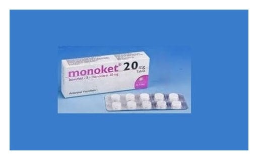

Monoket 20 mg Tablet, 20 Adet

Ne için kullanılır
KT · Bölüm 1 MONOKET kalp hastalıklarında kullanılan, damarların genişlemesini sağlayan (vazodilatör) ilaç grubuna (organik nitratlar) dahildir. Tabletler beyaz ve yuvarlak şekilli olup, üst yüzü düz çentikli, alt yüzü kavislidir. Tablet iki eşit parçaya bölünebilir. Bir kutu 20 tablet içerir. MONOKET kalbin kılcal damarlarının (koroner) hastalığına bağlı olarak kalbin yeterli oksijen alamaması nedeniyle oluşan ani göğüs ağrılarının (anjina pektoris) önlenmesi ve kalp üzerine güçlendirici etkisi olan ilaçlar (kardiyak glikozidler), idrar söktürücüler (diüretikler) veya damar genişleticilerle birlikte kronik kalp yetmezliğinin uzun süreli tedavisinde kullanılır.